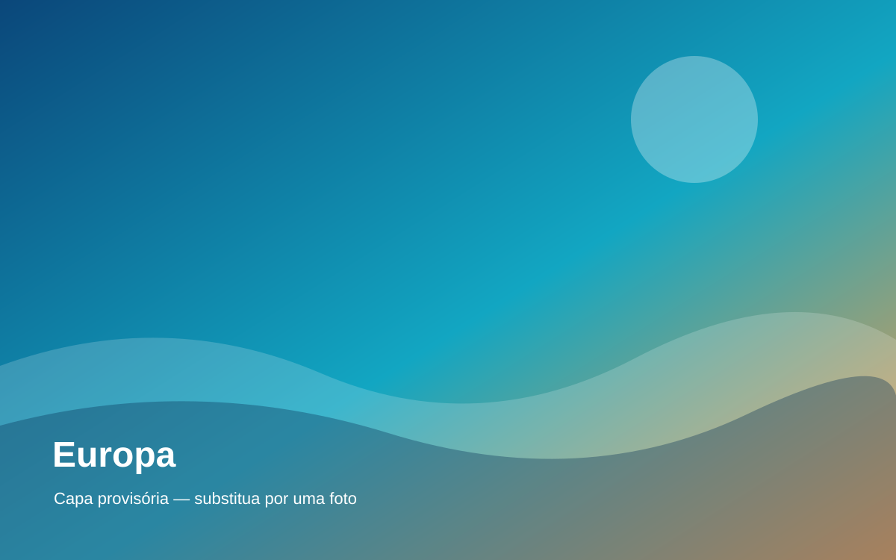

Cidades e cultura
Escolha os lugares que mais combinam com seus interesses e ritmo.

HISTÓRIA, CULTURA E DESCOBERTAS
Cidades icônicas, gastronomia, arte e paisagens para explorar.
Solicitar cotação →INSPIRE-SE
Uma viagem pela Europa pode combinar grandes capitais, cidades históricas, vilarejos e paisagens naturais.
Escolha os lugares que mais combinam com seus interesses e ritmo.
Compare trem, avião e outros meios de transporte entre as cidades.
Planeje a sequência dos destinos para aproveitar melhor o tempo disponível.
VAMOS PLANEJAR JUNTOS?
Conte seus planos para receber atendimento personalizado.
Falar com a agência no WhatsApp